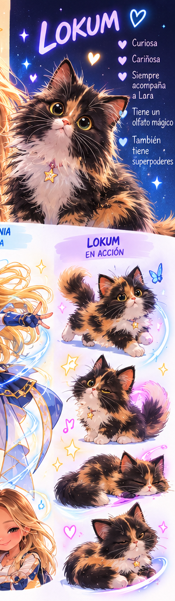

DEIN KLEINES LESEABENTEUER
Bild für Bild.
In deinem Tempo.
Anschauen, lesen oder vorlesen lassen.
Mit Lokum starten1 / 3

LOKUM · BEDIENPROBE
Hallo, du!
Hier kannst du jedes Bild in Ruhe anschauen. Möchtest du dir den Text vorlesen lassen?
Vorlesen startet erst, wenn du den Knopf drückst.